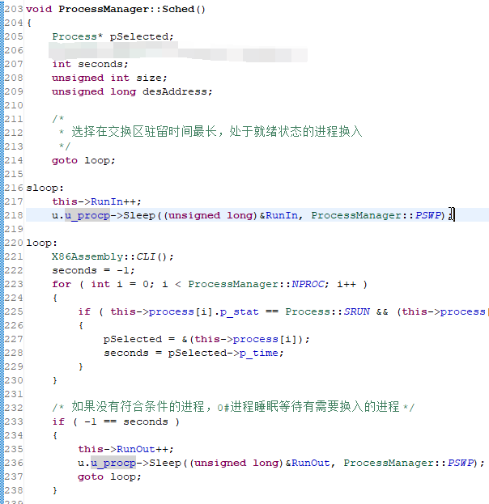

创建型模式-Singleton (1)
我相信，真理是越辩越明的。
这句话最重要的是 “辩”，其次才是 “真理”。
说不定哪天发现了更有趣的事情，就又鸽子了。
提问
在写代码的时候，总有无穷多种方法解决同一个问题。
即使它们划到最后，道理真的相同、运用的性质、定理真的相同，那么对于一个方法，也一定有无穷多种实现。
正因为问题的答案不仅仅由一种实现才能得出，正因为人的想法千奇百怪，实现的方式千奇百怪，这之间才有了比较。
不过这么说，问题的中心好像又回到了 “如何拥有更好的逻辑” 上来了。但设计模式考虑的应该不仅仅是 “如何拥有更好的思考方式”，还有 “如何更好地复现自己的思考”。
而现在，这里是要从我实际生活中见到的代码片段、项目，甚至是现实世界得到启发。
Singleton
比如 UNIX V6++
tjdx 计算机类的大三学生都会收到这么一份代码 —— UNIX V6++，这里附上该项目指导老师的 后日谈。
我们考虑一个单核操作系统。它有着哪些机制？
- 一个进程调度助手；
- 一个外设管理助手；
- 一个页表管理助手；
- 一个内存管理助手；
- 一个文件管理系统；
- …
总之它需要很多方面的帮助。而这些功能并不是简简单单几个函数就可以完成的。好吧，即使某些部分它可以被很简练地完成，代码加起来 700~800 行，但是站在更高层次上看待、管理它们是需要的。
抛开这些，我们先不谈这些东西的具体细节，而是把它们当作已经实现好的一个个类。站在 “继承链”（不合理地使用一下某门语言的概念）的角度来看，或许是有一些类出自同一父类的，比如比较重要的页表分为 Kernel Page, User Page 它们的管理方法肯定是不同的。
但是我们可以想象到，大部分的类是不存在父子关系的。比如页表管理和外设管理。我就想不到有半毛钱的关系。
（可以看到连 #include 的东西都不一样）
所以也不难理解，这些杂七杂八的东西堆在一起，是不可能自己动起来的。
由此产生了一个想法 —— 不得不需要一个东西来统筹放置它们。
但其实我知道
我这个逻辑是不对的。从 UNIX V6++ 几位编写者的角度来看，甚至或者说从正常人的角度来看，肯定是先给出一个 “大的类” 表示整个内核，然后才开始想为了实现这个内核，我需要什么东西。
而不是说，现有这么一些功能类，才想到要有一个东西来统筹安排。
如果说写代码都像我这个脑回路的话，那遇到一点问题就要推翻重写了！
但是我这里是用相反的思路验证上面这种想法的正确性嘛……
可是想想看
诚然，即使有些东西是独立开来的。
但是大多数的类终究还是得耦合在一起。
就拿 进程管理类 ProcessManager 来说，其中有一个方法叫做 sched，顾名思义，是与进程调度相关。
如果我还保持着 “一个类只能调与自己语义上十分相关的成员” 思想，那么这个流程图是解释不通的：
- 为什么进程调度的方法要计算 内存大小？
- 为什么还有可能涉及与 盘交换区 的操作？
这还是比较浅层，能从流程图看出来的。稍稍深入想一点，还会考虑到：
- 睡眠
Sleep和进程操作相关，这没错。- 但是我作为 进程管理类
ProcessManager，有那么多的进程需要管理，我怎么知道要让哪个Sleep？ Sleep必定是一个进程的方法，因为它是一个进程的行为。而非 进程管理类 的行为。- 除非 进程管理类 有一个可以通过给出进程
id让进程入睡的方法，否则这便不是 进程管理类 处理的事情。 - 但是这又陷入了 “如何获取进程
id” 这个问题，而它等同于 “如何调用那个需要入睡进程的Sleep方法”。
- 除非 进程管理类 有一个可以通过给出进程
- 我们轻松联想到：“只要知道当前用户，便可以知道当前用户下的进程！”
- 但是我作为 进程管理类
- 啊这，为什么又和用户
User有关了？

虽然很不想承认，但是 sched 方法在 UNIX V6++ 中就是这么实现的。
（当然，我也是和着流程图叙述的）
于是有了个问题
sched 中需要用户，或者说需要 UNIX V6++ 的 用户管理助手。
这很好解决，只需要让 进程管理类 继承一个有 用户管理助手 类型的成员就可以了。（肯定不会直接写到 进程管理类 里面去啊，又跟他没有特别大的关系）
但是这实在是太傻了。那样，进程管理类 中会有一个 UserManager 指针，但是与此同时，最顶层的 Kernel 类中也必定会定义一个 UserManager 指针。这两个指针指着同一个 用户管理助手，未免太憨了。
1 | class Kernel { |
不过转念一想
UNIX V6++ 好像说过了，是个单核操作系统。并且也不需要、不必要多个 Kernel 对象。
虽然整个 UNIX V6++ 在运行过程中，会有很多的进程（其实也不是很多），它们却不需要一个进程拥有一个核心，不需要一个真正完整的操作系统专门为它服务。（接下来就是几乎抄书了）
那么，为什么不想个办法让 Kernel 类下的所有成员都可以访问到它自己？
于是我们首先想到一个办法：全局变量。
好是好的，但是很容易被误改。
LoC 一高，眼睛一花，再加上新使用者并不是那么了解整个项目，万一再在入口函数位置自己新整了个内核对象，估计就会让程序产生难以预料的结果。
但其实还有另外一种方法：类内静态变量：（我也觉得一般人类也就能想到这两种了）
1 | class Kernel { |
于是想要在 ProcessManager::sched() 中取得当前用户对应的进程就变成了：
1 | UserManager u = Kernel::Instance().GetUserManager(); |
这算是个
单例模式(Singleton)。
当时读到 P84（很抱歉读的是中文版），就想到了这个例子，在 UNIX V6++ 中，对单例模式的应用还比较有限，其优势仅仅体现在 令整个项目有了一个 Kernel 唯一实例访问方法。
然而整个项目也仅仅有这一个单例的应用。（并不是所有的 static member in class 都是单例模式的体现）
由于项目关系，有关单例模式的 可变数目实例、Singleton 子类 等方面并没有体现。